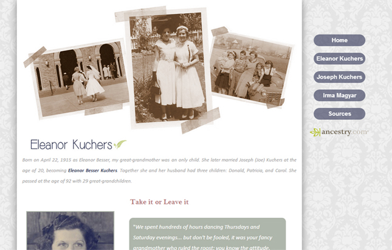

Automatic Email System 


I currently work on the Web Development Team at Grand Valley as a student web developer. I create and update sites for clients which can be anything from making a few small text changes on a form to writing an entire system.

In this case, my job was the latter. We noticed that many departments at GV were having students email print off and fill out pdf forms while we have this great tool called Form Builder that allows departments to easily create forms online that are easier to use and less hassle. In order to get information out to departments that had pdf forms that they could be using Form Builder instead, developed an automatic emailing system that would take information from an Excel spreadsheet about the form and then send a customizeed email to everyone listed about Form Builder.
The first step for the user in my emailing system is to choose a file with the information on it about the form. I provide an example available to download so the user can just start off that. I ran through the system using the above spreadsheet with my emails and various department and forms listed. It also contains rows with errors highlighted in red so I can demonstrate the system's error-checking capabilitiles.
Once submitted, the auto emailer will attempt to email the departments according to the information provided. If any rows have cells that are empty or contain an invalid email, no email is sent and the error is recorded along with the row number.

MCWT Web Design Contest 
|  | My senior year of high school I designed a five page website using Notepad++ for the MCWT's (Michigan Council of Women in Technology) web design competition to the theme of “Ancestors: OMG.” The criteria was to construct and launch a website about three older relatives. I also presented my website to a panel of judges as part of being selected as a finalist. |
This was my first time entering the competition and I entered in the advanced category and placed fourth. My prize included $75 and a trip to Mercedes-Benz Financial Services, which later helped me get a co-op working in the IT department there.
I used Photoshop to make graphics and add effects to pictures and FileZilla to upload my site to the MCWT server.